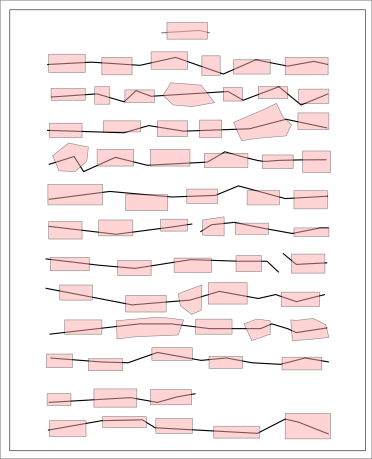

See: Description
| Class | Description |
|---|---|
| Line |
Represent a discovered line in an image
|
| Merge |
Store and merge two or more shapes
|
| Page |
Represent a collection of lines already recognised on a page
|
| Split |
Split a polygon in appropriate places
|

The package-info class allows the calculation of useful parameters
for later processing: the median line-depth (distance between baselines)
and the minimum word-gap. The latter is the basis for word-recognition
in the image. See
Getting word-spacing right
There is also the problem of merging adjacent shapes that align to the same word, and splitting shapes that align to different words. These operations are handled by the Split and Merge classes.